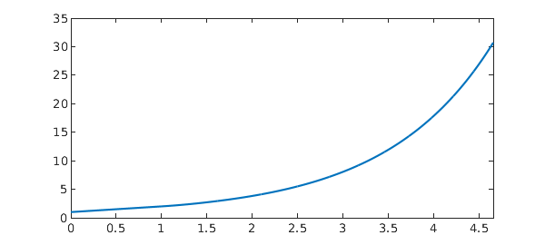

Introduction
Delay differential equations (DDEs) arise in a variety of areas, notably population dynamics, epidemiology, and control theory [1,2]. DDEs are typically first order initial value problems of the form $x'(t) = f(t, x(t), x(\tau(t)))$ with $\tau(t) \le t$, but there are also applications involving other delay types, as well as second- and higher-order DDEs and DDE boundary value problems [3,4].
The most common types of delay are:
o pantograph-type delay, where $\tau(t) = qt, \quad 0 < q < 1$
o discrete delay, where $\tau(t) = t - p, \quad p > 0$,
o continuous delay, where $x' = f(t,x(t),\int_0^tx(\tau)f(\tau-t)d\tau)$.
Here we demonstrate how Chebyshev spectral collocation may be used to solve basic DDEs of these types before demonstrating Chebfun's ability to solve some more challenging problems, including nonlinear problems with state-dependent delay, e.g., $x'(t) = -x(x(t))$.
Remark: The approach here is very simple and it is likely not new. Further, for the most part, we limit our attention to problems with few or no singularities introduced by the delay. The proliferation of singularities in DDEs is one of their most challenging aspects, and it is unlikely that the approach suggested here will be competitive in such cases without some additional ideas. However, whilst not a panacea, the approach seems elegant and fits nicely into the spectral collocation/Chebop framework.
Pantograph delay
We begin with pantograph delay. For simplicity we consider problems defined on $[0,1]$ so that $qt$ will also remain on $[0,1]$. In this situation we need not worry about defining a history function, $x(t<0) = \phi(t)$ or about discontinuities being introduced into an otherwise smooth solution. Both issues can be overcome to at least some extent, but are distracting.
Before solving the pantograph equation, let us first solve a standard IVP-ODE via spectral collocation for comparison. In particular, we solve $x'(t) = ax(t), x(0) = x_0$ with solution $x(t) = e^{at}x_0$ as follows:
a = 1; x0 = 1; % Problem parameters dom = [0 1]; % Solution interval n = 16; % Discretisation size t = chebpts(n, dom); % Chebyshev grid D = diffmat(n, dom); % Differentiation matrix I = eye(n); % Identity matrix z = zeros(1,n-1); % Zero vector A = D - a*I; rhs = 0*t; % Discretised operator and RHS % Enforce boundary condition via boundary bordering: A(1,:) = [1, z]; rhs(1) = x0; x = A\rhs; % Solve sol = exp(a*t)*x0; % Exact solution err = norm(x - sol) % Error MS = 'markersize'; plot(t, sol, '-', t, x, '.', MS, 15)
err =
1.009997900029461e-14
The geometric convergence of the spectral method means an accurate solution is obtained using very few points. In particular, 16 points is enough here to reach machine precision.
We now consider the pantograph equation $dx/dt = x(t) - 8x(t/2)$, $x(0) = 1$ with solution $x(t) = -\frac72t^3 + \frac{21}{2}t^2 - 7t + 1$. Notice in the code below that the only significant change from the ODE example above is the introduction of E = barymat(tau, t). Here barymat implements the `barycentric interpolation matrix' described in [5]. It the linear operator which interpolates data at the $n$-point Chebyshev grid t by a polynomial of degree $n-1$ and evaluates the interpolant at the points tau. This is precisely what we need to descretize the operator $x(\tau(t))$ when $x$ is represented by its values on a Chebyshev grid as in spectral collocation.
a = 1; b = -8; q = 0.5; x0 = 1; % Problem parameters tau = q*t; % Pantograph-type delay E = barymat(tau, t); % Barycentric interpolation matrix A = D - a*I - b*E; rhs = 0*t; % Discretised operator A(1,:) = [1, z]; rhs(1) = x0; % Boundary conditions x = A\rhs; % Solve sol = @(t) -7/2*t.^3 + 21/2*t.^2 - 7*t + 1; err = norm(x - sol(t)) % Error tt = linspace(0, 1, 1001); plot(tt, sol(tt), '-', t, x, '.', MS, 15)
err =
9.593075404615778e-15
The same problem can be easily solved in Chebfun:
N = chebop(@(t,x) diff(x) - a*x - b*x(q*t), dom); N.lbc = x0; x = N\0 sol = chebfun(sol, dom); err = norm(x - sol) plot(sol, '-', x, '.--', MS, 15)
x =
chebfun column (1 smooth piece)
interval length endpoint values
[ 0, 1] 4 1 1
vertical scale = 1
err =
1.646795363921568e-15
Since the solution here is a low degree polynomial, it is not surprising that excellent accuracy is achieved. However, we see below that the method remains effective for more challenging problems.
For example, multiple delays can be included:
q1 = 1/2; q2 = 1/3; N = chebop(@(t,x) diff(x) - a*x - b*x(q1*t) - x(q2*t), dom); N.lbc = x0; x = N\0 res = norm(N(x)) plot(x), shg
x =
chebfun column (1 smooth piece)
interval length endpoint values
[ 0, 1] 11 1 0.61
vertical scale = 1
res =
1.054745459954652e-13
Discrete delay
Discrete delay introduces two complications. First, we must define the history function $\phi(t)$ such that $x(t) = \phi(t)$ for $-p < t < 0$. For simplicity we assume a constant history function so that $x(-p < t < 0) = x(0) = x_0$. The second complication is that discontinuities in the solution (or its derivatives) appear once the delay becomes active. We leave it to the user to supply these as break points (see the DDE example below).
As above, we first review how to solve piecewise-defined problems for a non-delay example. We again solve $x'(t) = ax(t)$, $x(0) = x_0$, but now on the domain $[0, 0.5, 1]$, enforcing continuity of the solution at $x = 0.5$:
% Problem parameters n = 10; a = 1; x0 = 1; p = 0.5; % Left discretisation Right discretisation domL = [0, p]; domR = [p, 2*p]; tL = chebpts(n, domL); tR = chebpts(n, domR); t = [tL ; tR]; DL = diffmat(n, domL); DR = diffmat(n, domR); I = eye(n); Z = zeros(n,n); AL = [DL - a*I, Z]; AR = [Z, DR - a*I]; rhsL = 0*tL; rhsR = 0*tR; % Boundary and continuity conditions: z = zeros(1,n-1); B = [1, z, z, 0]; C = [z, 1, -1, z]; % Assemble: A = [B ; AL(2:n,:) ; C ; AR(2:n,:)]; rhs = [x0 ; rhsL(2:n) ; 0 ; rhsR(2:n)]; % Solve and plot: x = A\rhs; sol = @(t) exp(a*t)*x0; err = norm(x - sol(t)) plot(tt, sol(tt), '-', t, x, '.', MS, 15)
err =
5.911434596364366e-14
Now we incorporate the delay and solve $x'(t) = ax(t-0.5), x(0) = x_0$. Again, the only change is the introduction of the barymats. In the first subinterval we have $\tau(t_L) = t_L - 0.5 < 0$, and so all the evaluations take place at 0 (because the history function is the constant, $\phi(t) = x_0$). In the second interval we have $0 < t_R - 0.5 < 0.5$, so the evaluation points $\tau(t_R) = t_R - 0.5$ sit within the first interval and $x(\tau(t_R))$ = ER*xL.
tauL = max(tL - p,0); tauR = tR - p; % Discrete delay EL = barymat(tauL, tL); ER = barymat(tauR, tL); % Interpolation matrices AL = [DL - a*EL, Z]; AR = [-ER, DR]; % Discrete operators % Assemble: A = [B ; AL(2:n,:) ; C ; AR(2:n,:)]; rhs = [x0 ; rhsL(2:n) ; 0 ; rhsR(2:n)]; % Solve and plot: x = A\rhs; sol = [a*tL + 1 ; (a*p+1)+a*(tR-p).*(.5*a*(tR-p)+1)]; plot(t, sol, '-', t, x, '.', MS, 15) err = norm(x - sol)
err =
9.957407043250060e-15
Again, the same problem can be easily solved in Chebfun:
dom = [0, .5, 1];
N = chebop(@(t,x) diff(x) - x(max(t-p,0)), dom);
N.lbc = 1;
x = N\0
sol = chebfun({@(t) t + 1, @(t) (a*p+1)+a*(t-p).*(.5*a*(t-p)+1)}, dom);
err = norm(x - sol)
plot(sol, '-', x, '.--', MS, 15)
x =
chebfun column (2 smooth pieces)
interval length endpoint values
[ 0, 0.5] 2 1 1.5
[ 0.5, 1] 3 1.5 2.1
vertical scale = 2.1 Total length = 5
err =
1.160467857965791e-15
And on a larger domain:
dom = 0:.5:3; N = chebop(@(t,x) diff(x) - x(max(t-p,0)), dom); N.lbc = 1; x = N\0 res = norm(N(x)) plot(x), shg
x =
chebfun column (6 smooth pieces)
interval length endpoint values
[ 0, 0.5] 2 1 1.5
[ 0.5, 1] 3 1.5 2.1
[ 1, 1.5] 4 2.1 3
[ 1.5, 2] 5 3 4.3
[ 2, 2.5] 6 4.3 6.1
[ 2.5, 3] 7 6.1 8.7
vertical scale = 8.7 Total length = 27
res =
6.934401574041992e-14

This is what the resulting discretisation looks like:
spy(matrix(N, 10));
As with the pantograph example, multiple delays can also be included:
p1 = 1/2; p2 = 1/3; dom = sort(unique([0:p1:2 0:p2:2])); N = chebop(@(t,x) diff(x) - x(max(t-p1,0)) - x(max(t-p2,0)) - x, dom); N.lbc = 1; x = N\0 res = norm(N(x)) plot(x), shg
x =
chebfun column (11 smooth pieces)
interval length endpoint values
[ 0, 0.33] 8 1 2.2
[ 0.33, 0.5] 8 2.2 3
[ 0.5, 0.67] 8 3 4.1
[ 0.67, 0.83] 8 4.1 5.6
[ 0.83, 1] 8 5.6 7.8
[ 1, 1.2] 8 7.8 11
[ 1.2, 1.3] 8 11 15
[ 1.3, 1.5] 9 15 20
[ 1.5, 1.7] 9 20 28
[ 1.7, 1.8] 9 28 38
[ 1.8, 2] 9 38 53
vertical scale = 53 Total length = 92
res =
3.584611158810306e-11
In general, it is just a case of putting appropriate rows of barymats in the appropriate columns of the block discretisation.
spy(matrix(N, 10)), shg
Again, the solutions in these examples are low degree polynomials and accurate solutuons are to be expected. We will see more challenging cases below.
Continuous delay
DDEs with continuous delay can be interpreted as Volterra integro-differential equations, which can be solved via Chebyshev spectral collocation using the ideas described by Driscoll [6].
Here we solve $x'(t) + ax(t) = \int_0^t x(s)e^{-(t-s)}\,ds$ with solution $x(t) = \exp(-\frac{a+1}{2}t)(\cosh(bt) + \frac{1-a}{2b}\sinh(bt))$ with $b = \sqrt{a^2-2a+5}/2$ [7].
f = @(s,t) exp((t-s)); n = 16; dom = [0 1]; a = 1/2; t = chebpts(n, dom); I = eye(n); z = zeros(1,n-1); D = diffmat(n, dom); % Differentiation matrix V = f(t,t').*cumsummat(n, dom); % Volterra operator A = D - V + a*I; rhs = 0*t; % Discrete operator and RHS A(1,:) = [1, z]; rhs(1) = x0; % Boundary conditions x = A\rhs; b = sqrt(a^2-2*a+5)/2; sol = @(t) exp(-(a+1)/2*t).*(cosh(b*t) + .5*(1-a)/b*sinh(b*t)); plot(tt, sol(tt), '-', t, x, '.', MS, 15), shg err = norm(x - sol(t))
err =
2.514600006643636e-15
Again, the same problem can be easily solved in Chebfun:
N = chebop(@(t,x) diff(x) + a*x - volt(f, x), dom); N.lbc = x0; x = N\0 sol = chebfun(sol, dom); err = norm(x - sol) plot(sol, '-', x, '.--', MS, 15)
x =
chebfun column (1 smooth piece)
interval length endpoint values
[ 0, 1] 13 1 0.89
vertical scale = 1
err =
2.215872186258942e-15
State dependent delay
As the name suggests, state dependent delay is where the delay depends on the solution itself. Here we solve the simplest equation of such type, $x'(t) + x(x(t)) = 0$, $x(0) = 1$, $t \in [0,1].$
The state-dependent problem is clearly nonlinear and we emply a Newton iteration to solve the discretised system. To linearize we make use of the following: $\frac{d/dx}E(g(x))x = E(g(x)) + g'(x)E'(g(x))x = E(g(x)) + g'(x)E(g(x))x'$. In our case, $g(x) = x$, so the Jacobian is simply $J = D + E + {\rm diag}(EDx)$.
% Problem parameters:
n = 16; dom = [0 1]; x0 = 1;
% Constant operators:
t = chebpts(n, dom);
D = diffmat(n, dom);
% Initial guess:
x = t;
% Newton iteration:
for j = 1:10
% Linear operators
E = barymat(x, t);
F = D*x + E*x;
J = D + E + diag(E*D*x);
% Boundary conditions
J(1,:) = [1, zeros(1,n-1)]; F(1) = x(1) - x0;
% Newton update:
dx = J\F;
x = x - dx;
ndu = norm(dx)
if ( ndu < 1e-10), break, end
end
% Plot the solution
plot(t, x), shg
ndu =
2.309602471470345
ndu =
0.631236336901693
ndu =
0.099497190812100
ndu =
3.577747135495569e-04
ndu =
2.791430414256566e-08
ndu =
6.212628751095523e-16
We do not have an analytic solution in this case, but the quadratic convergence of the Newton iteration is a good indication that we are on the right track. Let us check the residual of the solution using Chebfun:
x = chebfun(x, dom); res = norm(diff(x) + x(x))
res =
3.767232149770612e-15
Again, the same problem can be easily solved in Chebfun:
t = chebfun('t', dom);
N = chebop(@(t,x) diff(x) + x(x), dom);
N.lbc = 1;
x = N\0
res = norm(N(x))
hold on, plot(t, x, '.--', MS, 15), shg, hold off
x =
chebfun column (1 smooth piece)
interval length endpoint values
[ 0, 1] 13 1 0.4
vertical scale = 1
res =
1.337640222970413e-12
Examples
Here are some other examples taken from the literature.
Example 1: [8, Example 5.3] Nonlinear pantograph delay.
q = 0.5;
dom = [0 1];
t = chebfun('t', dom);
g = -2*t/(1+t^2)^2 - 1./(1+(q*t)^2)^2;
N = chebop(@(t,y) diff(y) - y(q*t)^2, dom);
N.lbc = 1;
y = N\g
sol = 1./(1+t^2);
plot(sol, '-', y, '.--', MS, 15)
err = norm(y - sol)
y =
chebfun column (1 smooth piece)
interval length endpoint values
[ 0, 1] 21 1 0.5
vertical scale = 1
err =
2.372615617592961e-14
Example 2: [8, Example 5.4] System of pantograph delays.
q = 0.7;
dom = [0 1];
t = chebfun('t', dom);
N = chebop(@(t,u,v) [diff(u) - (sin(t).*u(q*t)+cos(t).*v(q*t)) ;
diff(v) - (-cos(t).*u(q*t)+sin(t).*v(q*t))], dom);
N.lbc = [sin(dom(1)) ; cos(dom(1))];
g = [cos(t) - cos(q*t)*cos(t) - sin(q*t)*sin(t);
sin(q*t)*cos(t) - cos(q*t)*sin(t) - sin(t)];
y = N\g
sol = [sin(t);cos(t)]
plot(sol, '-b', y, '.--r', MS, 15)
err = norm(y - [sin(t);cos(t)])
y =
2 x 1 chebmatrix of block types:
'<a href="matlab: disp(y{1,1})">chebfun</a>'
'<a href="matlab: disp(y{2,1})">chebfun</a>'
sol =
2 x 1 chebmatrix of block types:
'<a href="matlab: disp(sol{1,1})">chebfun</a>'
'<a href="matlab: disp(sol{2,1})">chebfun</a>'
err =
3.139659788286025e-15
Example 3: [9] State-dependent delay
dom = [0 1];
x = chebfun('x', dom);
mu = 0;
g = (3+mu)*x^(2+mu) - x^((3+mu)^2);
N = chebop(@(t,y) diff(y)-y(y), dom);
N.lbc = 0;
y = N\g
sol = x^(3+mu);
plot(sol, '-', y, '.--', MS, 15)
err = norm(y - sol)
y =
chebfun column (1 smooth piece)
interval length endpoint values
[ 0, 1] 4 -6.2e-15 1
vertical scale = 1
err =
1.446513354962840e-14
Example 4: Modified from [10]. Vanishing delay
% Find discontinuities:
dom = [0, (1+sqrt(5))/2];
for k = 1:10
dom(end+1) = fzero(@(t) t - 1/t - dom(end), dom(end));
end
t = chebfun('t', dom);
N = chebop(@(t,y) diff(y) - y(max(t-1/t,0)), dom);
N.lbc = 1;
N.init = 1+t;
y = N\0
res = norm(N.op(y))
plot(y, '-'), shg
y =
chebfun column (12 smooth pieces)
interval length endpoint values
[ 0, 1] 2 1 2
[ 1, 1.6] 13 2 2.9
[ 1.6, 2.1] 13 2.9 4.1
[ 2.1, 2.5] 12 4.1 5.5
[ 2.5, 2.8] 11 5.5 7.2
[ 2.8, 3.2] 10 7.2 9.2
[ 3.2, 3.5] 9 9.2 12
[ 3.5, 3.7] 8 12 14
[ 3.7, 4] 8 14 18
[ 4, 4.2] 8 18 21
[ 4.2, 4.4] 8 21 26
[ 4.4, 4.7] 8 26 31
vertical scale = 31 Total length = 110
res =
2.266971370886250e-11

Example 5: [11] Continuous & pantograph delay
dom = [0 20];
q = 1/2;
N = chebop(@(x,u) diff(u) - 1/100*(q*x-x-10)*u(q*x) - 1/100*(x+20)*exp(-1) - ...
1/100*cumsum(u) - 1/1000*feval(volt(@(t,s)(t/q-s), u), q*x), dom);
N.lbc = exp(-1);
u = N\0
sol = chebfun(@(x) exp(x/10-1), dom);
plot(sol, '-', u, '.--', MS, 15)
err = norm(sol-u)
u =
chebfun column (1 smooth piece)
interval length endpoint values
[ 0, 20] 14 0.37 2.7
vertical scale = 2.7
err =
6.916261673839570e-15
Example 7. [12] Second order nonlinear pantograph delay IVP
dom = [0 1];
x = chebfun('x', dom);
N = chebop(@(x,y) diff(y,2) + y(x) - 5*y(x/2)^2, dom);
N.lbc = @(u) [u - 1 ; diff(u) + 2];
N.init = 1+x;
y = N\0
sol = exp(-2*x);
err = norm(y - sol)
plot(sol, '-', y, '.--', MS, 15)
y =
chebfun column (1 smooth piece)
interval length endpoint values
[ 0, 1] 14 1 0.14
vertical scale = 1
err =
9.838069166740670e-16
Example 8. [13] First order nonlinear 'BVP' with pantograph delay
dom = [0 1/3];
t = chebfun('t', dom);
g = exp(t)/2;
N = chebop(@(t, u) diff(u) + u^2 + 2*u(t/2), dom);
N.bc = @(t, u) u(0) - u(1/3);
N.init = 1;
u = N\g
res = sqrt(norm(N(u)-g)^2 + norm(N.bc(u))^2)
plot(u), shg
u =
chebfun column (1 smooth piece)
interval length endpoint values
[ 0, 0.33] 11 0.27 0.27
vertical scale = 0.27
res =
3.429904390267680e-13
Example 9 - [14] MATLAB DDEX1 example. System, discrete shifts
dom = [0:.2:2];
lag = [1, 0.2];
N = chebop(@(t,x,y,z) [diff(x) - x(max(t-lag(1), 0)) ;
diff(y) - x(max(t-lag(1),0)) - y(max(t - lag(2),0)) ;
diff(z) - y], dom);
N.lbc = [1;1;1];
u = N\0;
x = u{1}
plot(u, '-b'), shg
delays = [1, 0.2];
opts = odeset('abstol', 1e-12, 'reltol', 1e-12);
sol = ddesd(@ddex1de, delays, @ddex1hist, [0,dom(end)], opts);
hold on, plot(sol.x, sol.y, '--r'), hold off
err = norm(x(sol.x) - sol.y(1,:))
x =
chebfun column (10 smooth pieces)
interval length endpoint values
[ 0, 0.2] 3 1 1.2
[ 0.2, 0.4] 4 1.2 1.4
[ 0.4, 0.6] 5 1.4 1.6
[ 0.6, 0.8] 6 1.6 1.8
[ 0.8, 1] 7 1.8 2
[ 1, 1.2] 8 2 2.2
[ 1.2, 1.4] 8 2.2 2.5
[ 1.4, 1.6] 8 2.5 2.8
[ 1.6, 1.8] 8 2.8 3.1
[ 1.8, 2] 8 3.1 3.5
vertical scale = 3.5 Total length = 65
err =
4.870904426600087e-12
Example 10 - [15] Modified from MATLAB DDEX2. System with state-dependent delay.
dom = [1 5];
t = chebfun('t', dom);
N = chebop(@(t,u,v) [diff(u) - v ;
diff(v) + v(exp(1-v))*v^2*exp(1-v)], dom);
N.lbc = [log(dom(1)) ; 1./dom(1)];
u = N\0;
u{1}
sol = [log(t) ; 1/t];
plot(sol, '-b', u, '.r', MS, 15)
err = norm(u - sol)
ans =
chebfun column (1 smooth piece)
interval length endpoint values
[ 1, 5] 32 -1.5e-14 1.6
vertical scale = 1.6
err =
5.515707501508308e-14
References
[1] Kuang, Yang, Delay Differential Equations: With Applications in Population Dynamics, Academic Press, 1993.
[2] Driver, Rodney David, Ordinary and Delay Differential Equations, Springer Science & Business Media, 2012.
[3] Erbe, L. H., and Qingkai Kong, Boundary value problems for singular second-order functional differential equations. J. Computational and Applied Mathematics, 1994.
[4] Jiang, Daqing, and Junyu Wang, On boundary value problems for singular second-order functional differential equations, J. Computational and Applied Mathematics, 2000.
[5] Driscoll, T.A., Hale, N., Rectangular spectral collocation, IMA J. of Numerical Analysis, 2016.
[6] Driscoll, T.A., Automatic spectral collocation for integral, integro-differential, and integrally reformulated differential equations, J. Comp. Phys., 2010.
[7] Jingtang Ma, Hermann Brunner, A posteriori error estimates of discontinuous Galerkin methods for non-standard Volterra integro-differential equations, IMA J. of Numerical Analysis, 2006.
[8] Ali, I., Brunner, H. and Tang, T., A spectral method for pantograph-type delay differential equations and its convergence analysis, J. of Computational Mathematics, 2009.
[9] Tavernini, L., The approximate solution of volterra differential systems with state-dependent time lags, SIAM J. Numer. Anal., 1978.
[10] Christopher A.H. Paul, Developing a delay differential equation solver, Applied Numerical Mathematics, 1992.
[11] Wei, Y., Chen, Y.P.: Legendre spectral collocation methods for pantograph Volterra delay-integro-differential equations, J. Sci. Comput., 2012.
[12] Ishtiaq Ali. Long time behavior of higher-order delay differential equation with vanishing proportional delay and its convergence analysis using spectral method, AIMS Mathematics, 2022.
[13] Jianli Li, Jianhua Shen, Periodic boundary value problems for delay differential equations with impulses, J. of Computational and Applied Mathematics, 2006.
[14] Shampine, L.F., Solving ODEs and DDEs with Residual Control, Applied Numerical Mathematics, 2005.
[15] W.H. Enright and H. Hayashi, The Evaluation of Numerical Software for Delay Differential Equations, Chapman & Hall, London, 1997.